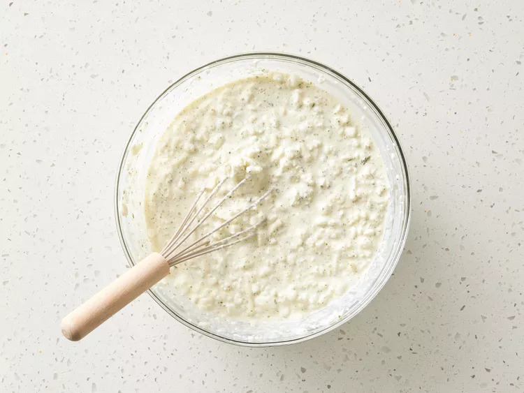

Simple Lasagna Recipe

This lasagna recipe was gotten from allrecipes.com.
It yields 12 servings of lasagna, perfect for a family and friends dinner party!
Ingredients
- Ground beef (1lb)
- Spaghetti sauce (32 oz)
- Cottage cheese (32 oz)
- Shredded mezzarella cheese, divided (3 cups)
- Eggs (2)
- Grated parmesan cheese (½ cup)
- Dried parsley (2 tsp)
- Salt (to taste)
- Gound black pepper (to taste)
- Lasagna noodles (9 sheets)
- Water (½ cup)
Steps
-
Gather all ingredients and preheat the oven to 350 degrees F (175 C)
-
Heat a large skillet over medium-high heat.
Cook and stir ground beef in the hot skillet until browned and crumbly, 8 to 10 minutes.
Drain and discard grease. Stir in spaghetti sauce and simmer for 5 minutes.
-
Combine cottage cheese, 2 cups of mozzarella cheese, eggs, 1/2 of the grated Parmesan cheese, dried parsley, salt, and pepper in a large bowl.

-
Spread 3/4 cup of sauce in a 9x13-inch baking dish.
Cover with 3 uncooked lasagna noodles, 1 3/4 cups of cheese mixture, and 1/4 cup sauce;
repeat layers once more. Top with remaining 3 noodles, sauce, mozzarella, and Parmesan cheese.
Pour 1/2 cup water along the edges of the dish. Cover tightly with aluminum foil.
-
Bake in the preheated oven for 45 minutes.
Uncover and bake for an additional 10 minutes.
Let stand 10 minutes before serving.
-
Serve and enjoy!